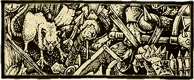
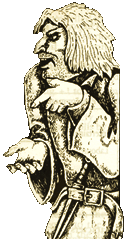
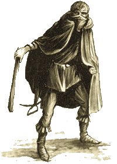

| |
Gerhard Gauner
kalandjai
Avagy pályafutások Warhammer-módra

A Warhammer szerepjátékban
az egyik legnagyobb érdeklõdésre számot tartó
elem minden bizonnyal a pályafutás-szisztéma.
Ugyanakkor talán ezt a legnehezebb megmagyarázni.
Érthetõbbek és átláthatóbbak lesznek
azonban, ha megpróbálom õket néhány konkrét
példán bemutatni. Ehhez persze szükség lesz
egy Warhammer-karakter vázlatos kidolgozására,
de a folyamat nem fog itt megállni: hõsünket
elkísérjük egy darabon késõbbi kalandozásain,
s egyúttal betekintést nyerünk az Óvilág
sajátosan egyedi hangulatába, a Warhammer-játékvezetés
mûhelytitkaiba is.
Mielõtt nekiállna dobálgatni
a kockával, a játékosnak elõször is célszerû
valamilyen koncepciót kialakítania magában
leendõ karakterével kapcsolatban. Lapozgatja hát
egy kicsit az Óvilág leírását a Warhammer-szabálykönyvben,
és lassan kialakul benne egyfajta elképzelés.
Egy nyomorúságos körülmények között élõ
alakot szeretne kidolgozni magának, akinek világéletében
az volt a vágya, hogy hatalomra és befolyásra
tegyen szert, a sors szeszélye vagy saját alkal-
matlansága folytán azonban minden kísérlete
meghiúsult. Végül a Káoszhoz fordult, hogy valóra
váltsa nagy tervét, ámde keserû csalódás érte:
még a Káosz is méltatlannak találta õt ahhoz,
hogy befogadja a gyermekei közé. A karakter
megkeseredett lelkû férfi, akinek az élete
csupa kudarc és frusztráció mégsem tanult az
eseményekbõl, nem fogadta el helyét a világban,
hanem sunyi és alattomos módon próbál feltörni,
kíméletlenül letiporva a még nálánál is
esendõbb keveseket, ugyanakkor elvtelenül hízelegve
a rangban fölötte állóknak. Ha élt is benne
valaha a lelkiismeret szikrája, régen kialudt már:
most gyûlöl mindent és mindenkit, s irgalmatlan
bosszút akar állni vélt sérelmeiért az egész
világon – szerencsére valószínûleg nem sok
esélye van rá, hogy tervét valóra is váltsa.
A játékos egyelõre elégedett ezzel az
elgondolással: elnevezi a karakterét Gerhard
Gaunernek, és nekilát meghatározni a fõjellemzõket.
Mozgás (1K3+2): 5
Támadóérték (2K10+20): 25
Célzóérték (2K10+20): 40
Erõ (1K3+1): 3
Állóképesség (1K3+1): 4
Seb Pontok (1K3+4): 7
Fürgeség (2K10+20): 39
Támadások Száma: 1
Kézügyesség (2K10+20): 29
Vezetés (2K10+20): 26
Intelligencia (2K10+20): 31
Hidegvér (2K10+20): 28
Akaraterõ (2K10+20): 25
Rokonszenv (2K10+20): 26
A legtöbb fõjellemzõ magától
értetõdõ, egyikhez-másikhoz azonban talán nem
árt pár szavas magyarázatot fûzni. A Fürgeség
a karakter reakciósebességének és általános
testi agilitásának mértéke, a Kézügyesség
ezzel szemben kizárólag az ujjakra és a finommívû
munkára vonatkozik. Ez a két fõjellemzõ
gyakorlatilag a más RPG-kbõl jól ismert Ügyesség
ötletes kettéválasztása: aki kiváló atléta,
az nem biztos, hogy órát is jól tud szerelni,
és viszont. Hasonló a helyzet a Vezetés- sel és
a Rokonszenvvel is, ezeket a tulajdonságokat más
szerepjátékokban Karizma név alatt szokták összefoglalni.
Ha azonban jobban belegondolunk, egyáltalán nem
biztos, hogy egy született vezetõ a mindennapi
életben rokonszenves egyéniség (kevés baka hívja
meg vendégségbe a kiképzõ õrmesterét),
mint ahogy az is kétséges, hogy kedves, öreg,
barátságos nagynénikbõl válsághelyzet esetén
azonnal tetterõs szervezõ válna. A Hidegvér és
az Akaraterõ között már nehezebb ilyen különbséget
tenni, de az érzékletes példák itt is segíthetnek.
A hidegvérû ember rettenthetetlen, ám nem feltétlenül
makacs és kitartó az akaraterõs tûzön-vízen
át keresztülviszi, amit egyszer a fejébe vett,
de ez még nem zárja ki, hogy félõs vagy ijedõs
legyen.
Gerhard Gauner legtöbb értéke
átlagosnak mondható, bár akad néhány kivétel.
A Mozgás, a Célzóérték, az Állóképesség
és a Fürgeség kimondottan jó (gyors, szívós
kis ember, aki szereti messzirõl elintézni az
ellenségeit), határozottan alacsony viszont a Támadóérték,
az Akaraterõ, a Vezetés és a Rokonszenv
(gyenge, ingatag személyiség, aki nem szívesen
vállalja a közelharc kockázatát). Mindez egyelõre
egybevág a karakterrõl megformált képpel.
A fõjellemzõket áttanulmányozva a játékos
látja, hogy csak két kasztcsoport (a vándor és
a zsivány) közül választhat Gerhardnak túl
alacsony a Támadóértéke és az Akaratereje,
hogy harcos, illetve akadémikus lehessen. A vidéki
élet egyelõre nem igazán vonzza, ezért a zsivány
mellett dönt.
Ezután következik a választott pályafutástól
független kezdõképzettségek meghatározása.
Ez elég bonyolult eljárás, a kocka szeszélyén
kívül a karakter életkora, faja és
kasztcsoportja is kihatással van rá. Mivel a pályafutásokkal
kapcsolatos problémakört nem érinti, nem térek
ki a mechanizmus részletes leírására számunkra
most elegendõ a végeredmény ismerete.
Képzettségek: Ösztönös
Menekülõ, Lovaglás, Szívós Fickó, Macskaszemû
|
Gerhard barátunknak tehát természetadta
tehetsége van, hogy vészhelyzetben elpárologjon,
ráadásul nagyszerûen lát a sötétben,
és a sok nélkülözés annyira
megedzette, hogy eggyel növelheti az Állóképesség
értékét (azaz 4-rõl 5-re). Ami a
lovaglást illeti, ez talán Gerhard ifjúkorára
utal: elképzelhetõ, hogy falun vagy tanyán
nõtt föl, de valószínûleg korán
elkerülhetett onnan, különben más
hasonló jártasságai is lennének. A játékos
elégedett ezek a képzettségek nagyszerûen
illenek a karakterrõl alkotott képébe.
Most jön az igazán fogós feladat: pályafutást
kell választani Gerhardnak.
A játékos nem gondolkodik sokat,
hiszen magában már kidolgozta a karakter
hátterét, és ehhez a zsivány
kasztcsoportban legelöl található pályafutások
egyike kiválóan illik. Gerhard Gaunerbõl
– nem a kocka |
 |
|
szeszélye, hanem tudatos
választás folytán – koldus lesz az Óvilágban.
A pályafutáshoz tartozó képzettségeket
automatikusan megkapja. |
Képzettségek: Koldulás,
Rejtõzés Városi Környezetben, Titkos Nyelv:
Tolvajnyelv, Titkos Jelek: Tolvaj-jelek, Nesztelen
Mozgás Városi Környezetben
Ezek a képzettségek a Fürgeség
és az Intelligencia fõjellemzõkhöz társíthatók
Gerhardnak mindkét vonatkozó értéke elég
magas, így hát a játékos elégedett a választással.
Ezután megvizs- gálja, milyen irányban
fejlesztheti tovább karakterét az aktuális pályafutásban.
Valószínûleg senki számára nem jelent
meglepetést, hogy a választott hivatás e téren
nem sok jóval kecsegtet. A koldus foglalkozással
legfeljebb annyi elõny jár, hogy a viszontagságok
és a nélkülözések megedzik a karakter testét,
és az utcán élve – ahol óhatatlanul elõfordulnak
kisebb csetepaték – valamicske harci tudást is
felszedhet. A pályafutás egy fejlõdési
fokozatot kínál a Támadóérték, Célzóérték
és Állóképesség terén, kettõt pedig a Seb
Pontok vonatkozásában. (Egy fejlõdési fokozat
mindig 10 pont az 1-tõl 100-ig terjedõ képzettségek,
illetve 1 pont az 1-tõl 10-ig terjedõk esetében.)
Ezeket a fejlõdési fokozatokat természetesen
Tapasztalat Pontért kell megvásárolni, kivéve
a legelsõt, amelyik ingyen van. Mivel a játékos
afféle sokat bíró kivert kutyának képzeli el
Gerhardot, az ingyen fejlõdési fokozatot az Állóképességhez
rendeli, amelynek értéke ezzel 6-ra nõ.
A karaktergenerálásnak
ezzel még nincs vége teljesen – elõbb meg
kell határozni Gerhard felszerelési tárgyait és
a vészhelyzetben amolyan deus ex machinaként
felhasználható Sors Pontokat –, ez a fázis
azonban a mi szempontunkból nem túl lényeges,
ezért inkább átugornám. Gerhard Gauner most már
készen áll a kalandozásra kétségtelen ugyan,
hogy nem tartozik a különösebben impresszív
karakterek közé, a Warhammer szerepjáték
sötét és nyomasztó légkörébe azonban nagyon
is illik.
A voltaképpeni játék megkezdése elõtt
nem árt átgondolni, hogy milyen célok lebegnek
a frissiben kidolgozott karakter elõtt, és
hogyan akarja elérni õket. Gerhard esetében az
elsõ kérdésre elég egyszerû a válasz: ez a
nyomorult pária hatalomra, befolyásra és tekintélyre
vágyik, hogy egyszer végre õt is tiszteljék az
emberek – és akkor majd irgalmatlanul a
mocsokba taszítja õket, mint ahogy vele tették
gyermekkorában. Ettõl a céltól messzebb talán
nem is lehetne, mint jelenlegi állapotában. Ha
ki akar törni szörnyû helyzetébõl, pénzre és
jövedelemre kell valahogy szert tennie, szerény
képességei azonban egyelõre nem jogosítják
fel különösebben nagy várakozásokra.
A mesélõ ezekhez a körülményekhez
igazítja Gerhard elsõ kalandjait. A koldus – a
többi játékos karakterrel és néhány NJK-val
együtt – erõszakos és aljas rablóbandába tömörül
egy városban, és szegény vidéki utazók
kifosztásából élnek. Gerhardnak az a dolga,
hogy kiválassza az utcán a szóba jöhetõ célpontokat,
és olyan helyre csalja õket, ahol le lehet
csapni rájuk. Nem mintha igazán jól csinálná
– külseje, viselkedése alapján elég kevesen
bíznak meg benne –, de hát a társai sem
valami nagy szakemberek, ezért megtûrik maguk között.
A banda természetesen csak a fáradtnak, gyengének
vagy betegnek tûnõ utazókat meri megtámadni,
így hát a mindenkori zsákmány bizony soványka.
A korrupt városi vezetéstõl nem kell félniük
– ugyan mit számít egy idegen csavargó élete?
–, az igazi, komoly bûnözõk azonban
rendszeresen megjelennek, hogy kordában tartsák
õket és behajtsák rajtuk a sápot. A kiszemelt
áldozat néha védekezik, a nagymenõk mindig kemény
legények, és a bandán belül is napirenden
vannak a verekedések. Gerhardnak valahogy mégis
sikerül átvészelnie a nehéz idõket vészhelyzetben
általában elszalad. Igaz, pár alkalommal
alaposan eltángálják, mivel azonban szívós
alkat, elég hamar felépül a sérüléseibõl.
Egy ízben még némi tekintélyre is szert tesz,
amikor a vaksötét utcán egy öklömnyi kõvel
tizenöt méterrõl fejen találja a társai elõl
menekülõ áldozatot.
A pitiáner rablótámadások
és utcai verekedések során Gerhard összegyûjt
300 Tapasztalat Pontot, amin vásárol magának két
fejlõdési fokozatot a Seb Pontok és egyet a Célzóérték
terén. (SP: 7 --> 9 CÉ: 40 --> 50) A
koldus pályafutás ugyan feljogosítaná, hogy
további 100 TP-ért cserébe a Támadóértékét
is növelje 10-zel, a játékos azonban nem él
ezzel a lehetõséggel, mert Gerhard az eddigi
kalandok folyamán a közelharcnak még a gondolatától
is irtózott, és a továbbiakban sem szándékozik
ilyen veszedelmes ügyekbe keveredni. Ezzel a pályafutás
által nyújtott lehetõségek kimerültek.
Gerhard viszont szeretné tovább javítani a fõjellemzõit,
és új képzettségekre vágyik lassan szükségét
érzi a váltásnak.
Egy szép napon az egyik csapdába csalt
utazóról kiderül, hogy lepusztult külseje csak
álca: valójában bretonniai kém, és értékes
iratok vannak nála. A kém eszelõsként harcol,
és a banda felét (az NJK-kat) lemészárolja,
mire a túlerõ lebírná. A túlélõk megszerzik
a titkos iratokat, és megpróbálják jó pénzért
eladni egy városi tanácsnoknak, sajnos azonban
nem sikerül bejutniuk a színe elé: a házát õrzõ
testõrök meg sem hallgatják õket, hanem félholtra
verik az egész gyülevész csürhét. Gerhard és
társai tudják, hogy itt a lehetõség, végre
kitörhetnének a nyomorból, de fogalmuk sincs róla,
mit csináljanak. Végül az õket sarcoló
komolyabb bûnbandák egyikéhez fordulnak segítségért.
A nagymenõk rövid úton elveszik tõlük az
iratokat, ingyen visszaszolgáltatják a tanácsnoknak,
learatják a törvénytisztelõ honpolgároknak járó
dicsõséget, és szereznek egy jó pontot a városi
vezetésnél. Gerhard és a többiek is megkapják
a jutalmukat: mivel ilyen okosan és megfontoltan
cselekedtek (legalábbis a profi bûnözõk szemszögébõl
nézve), nem verik el õket.
A mesélõ minden játékosnak 200 TP-t
oszt ki a kaland végén elérni ugyan nem sok
mindent értek el, az viszont kétségtelen, hogy
rengeteget tanultak. Az események ráadásul tovább
motiválják a karaktereket: mindegyikük mélységesen
meggyûlöli a balsorsukért felelõs bûnban- dát,
és bosszút forral. A közös cél közelebb
hozza egymáshoz a karaktereket, a találomra összeverõdött
csürhében kezd kialakulni az összetartás,
megteszik az elsõ lépéseket, hogy igazi
kalandozótársaság lehet belõlük. Azzal tisztában
vannak, hogy egyelõre nem csaphatnak le az ellenségeikre,
még túl gyengék hozzá de azt is tudják, hogy
elõbb-utóbb eljön az õ idejük...
Gerhard játékosa nekilát elkölteni a
200 TP-jét. Elõször is 100 TP-ért pályafutást
vált, egyszer s mindenkorra maga mögött hagyva
a küzdelmes kolduséletet: patkányfogó lesz belõle.
No persze, ez nem valami mérföldes ugrás a társadalmi
ranglétrán, de vegyük figyelembe az elõnyöket
is: Gerhardnak immár munkája van, igaz, alantas
és nehéz, de legalább egy kevéske rendszeres jövedelem
jár vele. A maradék 100 TP-ért sietve megvásárolja
az új pályafutás egyik fontos képzettségét.
Képzettségek:
Fegyverspecialista: parittya
Gerhard választása nem véletlenül
esett a pályafutásra. A banda “esze” – egy
kiugrott írnok, az egyetlen közülük, aki tud
írni-olvasni – emlékszik egy könyvre, amit a
régi gazdájánál látott egyszer. (A gazdája
egyébként ugyanaz a tanácsnok volt, akihez az
elõzõ kalandban hiába próbáltak bejutni a
karakterek.) Ebben a könyvben többek között az
állt, hogy a város csatornájának mélyén kétszáz
éve egy titkos Káosz-kultusz ütött tanyát,
amelynek volt néhány igen befolyásos tagja is,
s elsõsorban egy õsi ereklyébõl merítette
hatalmát. A kultuszt késõbb kifüstölték a
Birodalom landsknechtjei, a Káosz-ereklyérõl
azonban nem esett több szó, és az írnok azt
javasolja, hogy kutassák fel, hátha föl tudják
használni a bûnözõk ellen. Gerhard új hivatása
kitûnõ ürügy rá, hogy hosszasan tartózkodjon
a csatornarendszerben, és mivel egyedül túlságosan
sebezhetõ lenne, csatlakozik hozzá pár társa
is, akik szintén pályafutást váltottak. Néhány
kaland az ereklye utáni hajsza jegyében zajlik,
bár nem mindegyik közvetlenül kapcsolatos vele
egy ízben például Gerhardék rábukkannak egy
csempésztanyára, amely a gyûlölt profi bûnbanda
irányítása alatt áll, és sikerül felszámolniuk.
A csatorna átkutatása és feltérképezése során
Gerhard 400 TP-t gyûjt össze, amit mind új képzettségek
vásárlására fordít most leginkább erre van
szüksége.
Képzettségek: Ellenállás
Betegségekkel Szemben, Ellenállás Mérgekkel
Szemben, Csapdatelepítés, Csapdakeresés
A karaktereknek végül sikerül
kinyomozniuk az ereklye rejtekhelyét, mikor
azonban elindulnak a megszerzésére, kelepcébe sétálnak.
A Káosz-ereklye helyett a bûnbanda várja õket
a csatornában, és gyilkos küzdelem veszi
kezdetét, amelyben végül – saját legnagyobb
meglepetésükre – a karakterek kerekednek felül.
A véres összecsapásban persze õk is vesztenek
néhány embert – egyikük a volt írnok –, a
bandavezért azonban élve sikerül kézre keríteniük.
Gerhard kivallatja néhány fogva tartott patkány
hathatós segítségével a bandavezér eleinte
nem hajlandó beszélni, idõvel azonban már csak
úgy ömlik belõle a szó.
A karakterek megtudják, hogy a Káosz-ereklyét
már régen felszínre hozták a csatornából, még-
pedig éppen az a tanácsnok, aki az írnok régi
gazdája volt. A tanácsnok a Káosz beavatottja,
és mióta megpróbáltak kapcsolatba lépni vele,
figyelteti minden lépésüket, mert aggódik
kiugrott írnoka miatt. Amikor rájött, hogy a
karakterek az ereklyét keresik, haladéktalanul
megbízta a bûnözõket a likvidálásukkal, mert
félt, hogy fény derül sötét titkára.
 |
Gerhard és életben maradt társai
végeznek a kivallatott bandavezérrel, és
feszülten néznek egy- másra. Bajban
vannak, mégpedig nagyban: olyan ellenséget
szereztek maguknak, aki könyörtelenül a
sarkukban lesz, sehol sem tudnak tõle
megszabadulni. Az egyetlen esélyük, ha
õk lépnek elõször, és nyilvánosan
leleplezik, esetleg meggyilkolják a tanácsnokot.
Szerencsére a bûnözõkkel vívott öldöklõ
küzdelem és a bandavezér sikeres kikérdezése
fejenként 500 TP-t hozott a konyhájukra,
ami némileg megkönnyítheti a dolgukat.
A karakterek, a közös veszély által
minden eddiginél szorosabbra kovácsolódott
egységben, felszívódnak a csatornák mélyén,
a játékosok pedig – köztük a
Gerhardot irányító – nekifognak a
TP-k elköltésének. |
A patkányfogó pályafutáshoz egyetlen
olyan képzettség tartozik, amit Gerhard még nem
sajátított el, az Idomítás (kutya). A
mesélõ azonban kijelenti, hogy ezt a képzettséget
nem lehet a sötét csatornarendszerben bujkálva
megtanulni, a játékos pedig egyébként sem látja
különösebb szükségét, ezért inkább a fõjellemzõk
fejlesztésére fordítja a figyelmét. Az aktuális
pályafutás egy-egy fejlesztési fokozatot engedélyez
neki a Támadóérték, a Célzóérték, a Seb
Pontok, a Kézügyesség és a Hidegvér terén.
Sajnos azonban korábbi pályafutása során
Gerhard már növelte egy fokozattal a Célzóértékét,
és kettõvel a Seb Pontjait. A szabályok szerint
az adott fõjellemzõnél minden fejlesztési
fokozat (elsõ, második stb.) csak egyszer vehetõ
igénybe. Amennyiben Gerhard javítani szeretne
ezen a két értéken, olyan pályafutást kell választania,
amelyik legalább két fejlesztési fokozatot
tartalmaz a Célzóérték, illetve hármat a Seb
Pontok esetében. Marad tehát a Támadóérték,
a Kézügyesség és a Hidegvér. Gerhard továbbra
is rühelli a közelharcot, ezért az elsõ lehetõség
kiesik. A másik kettõt viszont habozás nélkül
kihasználja: most, hogy már kiigazodik a különféle
csapdák között, nem árt gyakorlatoztatni egy
kicsit az ujjait, hiszen a tanácsnok házát
minden bizonnyal alaposan védik mivel pedig
ellenségük a Káosz szolgája, Gerhard jól
teszi, ha felkészül néhány hátborzongató látványra.
A játékos tehát elkölt 200 TP-t, és a
karakter Kézügyességét 29-rõl 39-re, Hidegvérét
pedig 28-ról 38-ra emeli.
Még mindig maradt azonban 300
Tapasztalat Pontja, amivel nem tud mit kezdeni, mégis
szeretné elhasználni, mivel a küszöbön álló
összecsapás elég keménynek ígérkezik. Megkérdezi
a kalandmestert, hogy nem válthatna-e pályafutást.
A mesélõ némi gondolkodás után engedélyezi
neki, azzal a feltétellel, hogy az új pályafutásnak
szoros kapcsolatban kell állnia a régivel, és
nem tartalmazhat gyökeresen új elemeket. Ez erõsen
behatárolja a játékos lehetõségeit, aki
hosszas tépelõdés után a rabló mellett dönt.
A kalandmester engedélyezi a váltást, mert úgy
ítéli meg, hogy Gerhard eddigi tevékenysége
valóban nem sokban különbözött a közönséges
rablókétól. A játékos kifizeti a váltás árát
– 100 TP-t –, és áttanulmányozza a rabló pályafutás
fejlesztési sémáját. Ez egy-egy fejlesztési
fokozatot engedélyez a karakternek a Támadóérték,
a Célzó- érték, az Erõ és a Fürgeség terén,
illetve kettõt a Seb Pontok vonatkozásában. A választás
nem nehéz: mivel a Célzóérték és a Seb
Pontok terén Gerhard már kihasználta a felkínált
lehetõségeket (lásd az utalást a kapcsolódó
szabályra az elõzõ bekezdésben), a Támadóértékét
pedig nem akarja javítani, marad az Erõ és a Fürgeség.
A játékos kihúzza a maradék 200 TP-t, és feltünteti
a változásokat a karakterlapján. (Erõ: 3
--> 4 Fürgeség: 39 --> 49).
Amíg a karakterek a csatornarendszerben
bujkálnak, ellenségük, a tanácsnok sem tétlenkedik.
Mivel bérencei nem jelentkeztek, természetesen rájön,
hogy valami nincs rendjén. Elsõ lépésként
sietve veszedelmes bûnözõkké nyilvánítja a
karaktereket, vérdíjat tûz ki a fejükre, és fõvesztés
terhe mellett megtiltja, hogy bárki a segítségükre
legyen. Mikor a balsorsú írnok nála szolgált,
a derék tanácsnok még jónevû ügyvéd volt,
mostanra azonban titokban már démonológussá
avanzsált (elvégre az NJK-k is válthatnak pályafutást).
Így hát nem esik különösebben nehezére megidézni
egy különösen undorító Káosz-szörnyet, és
a karakterek után küldeni a csatornákba.
Gerhardék elfognak egy kisstílû tolvajt, aki a
vérdíj reményében próbálta becserkészni õket,
és megtudják tõle, hogy városszerte kíméletlen
hajsza indult ellenük. A játékosok egyre
magabiztosabbak karaktereik rohamléptekkel fejlõdtek
az utóbbi idõben, számos nehéz helyzetet sikerült
átvészelniük, és mind inkább kezdik azt
hinni, hogy az õ kezükben van az események irányítása.
Már a tanácsnok háza ellen indított akciót
tervezgetik, amikor frissen szerzett önbizalmukat
szilánkokra zúzza a Káosz-szörny megjelenése:
sajnos, a tolvaj elfogása után kissé
elhanyagolták rejtekhelyük õrzését.
A karaktereknek komoly esélyük lenne a
gyõzelemre, ha összehangoltan szállnának
szembe a szörnyeteggel, sajnos azonban súlyos
hibát követnek el, és inkább menekülni próbálnak.
(A mesélõ úgy érezte, ennyi közösen átélt
viszontagság után már joggal számíthat arra,
hogy a csapat összeforrott egészet alkot, de tévedett.)
A démont végül sikerül elpusztítani, ám ez
valamennyi karakternek az életébe kerül,
Gerhard Gaunert kivéve. A sebekkel borított túlélõ
félájultan támolyog ki a titkos búvóhelyrõl,
egyenesen egy Günther Sommervogel nevû ravasz
fejvadász karjaiba. Günther már régóta ráakadt
a karakterekre, ám egyszerûen meghúzta magát,
és várakozásra rendezkedett be. Tudta, hogy elõbb-utóbb
másokat is idecsábít a jókora vérdíj, és õ
csak utána akart lecsapni a zsákmányra akár
egy másik fejvadásszal, akár a karakterekkel
kell szembeszállnia, mindenképpen legyengült
ellenfelekre számíthat. A Káosz-szörny
felbukkanása kissé megzavarta, ám hidegvérû
gazfickó lévén így is habozás nélkül
kihasználta a kínálkozó alkalmat.
Gerhard nagyon nagy bajban van, de nem
veszíti el a fejét. Haszontalan könyörgések
és rimánkodások helyett egyszerûen kitálal
Günthernek elmond neki mindent, amit tud. A
fejvadász gondolkodóba esik foglyának meséje
eléggé hihetetlen ugyan, ám a Káosz-szörny
megjelenése arra utal, hogy igazat beszél. A tanácsnok
aligha vállalná a kockázatot, hogy a Káosszal
folytatott üzelmeinek tanúja maradjon Günther rádöbben,
hogy az õ élete is veszélyben forog. Ezután törékeny
alapokon álló szövetség köttetik gyõztes és
legyõzött között egyik sem bízik a másikban, ám a közös ellenséggel szemben csakis
egymásra számíthatnak.
Günther magához veszi a halott karakterek
fejét, Gerhardot pedig láncra veri, de csak színleg
társa bármikor kiszabadíthatja magát. Ezután
egyenesen bemasíroznak a tanácsnok házába, azt
a látszatot keltve, mintha a fejvadász a kitûzött
vérdíjért jelentkezne. A tanácsnok valóban
meg akarja öletni Günthert, amikor azonban ráuszítja
a testõreit, Gerhard lerázza magáról a béklyókat, elõkapja elrejtett parittyáját, és
beleveti magát a küzdelembe. Sommervogel kardja
véres rendet vág a tesõrök között a
meglepett tanácsnok varázsolni készül, Gerhard
parittyaólma azonban bezúzza a homlokát. A kézitusa
rövid, de véres, és mire a városi milícia a
tett színhelyére érne, a két támadó eltûnik
az éjszakában.
A közösen átélt hajmeresztõ kaland
egyfajta bajtársias kötelékben kovácsolja össze
a két karaktert. A városból természetesen sürgõsen
el kell tûnniük, Günther azonban felajánlja
Gerhardnak, hogy társuljon hozzá, kalandozzanak
együtt tovább. Gerhard elfogadja az ajánlatot,
és a játékos nekilát elkölteni a sikeres
kalandért kapott 500 TP-t.
Gerhard jelenlegi pályafutása – a
rabló – egyértelmûen kényszerválasztás
volt, erõteljesen behatárolt körülmények között
született. Sem a fejlesztési sémája, sem a
felkínált képzettségek nem nyújtottak a
karakternek nagyobb ívû lehetõségeket. Ezért
Gerhard ebben a pályafutásban nem fog olyan sok
idõt eltölteni, mint az elõzõ kettõben, hanem
az elsõ adandó alkalommal vált. Az új pályafutás
kiválasztásánál a játékosnak két körülményt
kell figyelembe vennie: a vándor fejvadásszal
való partnerkapcsolatot, illetve Gerhard személyiségét,
amelynek alapjait már a fõjellemzõk meghatározása
elõtt lefektette.
Némi fejtörés után végül a
rabszolgakereskedõ mellett dönt (100 TP), noha a
rendelkezésre álló karrier-kijáratok közül
nem feltétlenül ez a legelõnyösebb. Kiválóan
kiegészíti viszont Günther tevékenységét, és
megfelel Gerhard kíméletlen, keserû, bosszúvágyó
jellemének is. A rabszolgakereskedõknek kevés
olyan képzettségük van, aminek Gerhard különösebben
szükségét érezné, a fejlesztési sémájuk
azonban már érdekesebb. Egy fejlesztési
fokozattal szolgál a Vezetés és az Akaraterõ,
kettõvel a Támadóérték, a Célzóérték, az
Erõ, a Fürgeség és a Hidegvér, végül pedig
néggyel a Seb Pontok terén. Gerhard maradék 400
TP-jét a Célzóértéke, a Fürgesége, a Hidegvére
és a Seb Pontjai növelésére fordítja. Mikor
tehát búcsút veszünk tõle, karakterprofilja a
következõképpen néz ki:
Mozgás: 5
Támadóérték: 25
Célzóérték: 60
Erõ: 4
Állóképesség: 6
Seb Pontok: 10
Fürgeség: 59
Támadások Száma: 1
Kézügyesség: 39
Vezetés: 26
Intelligencia: 31
Hidegvér: 48
Akaraterõ: 25
Rokonszenv: 26 |
 |
Képzettségek: Ösztönös Menekülõ,
Lovaglás, Szívós Fickó, Macskaszemû, Koldulás,
Rejtõzés Városi Környezetben, Titkos Nyelv:
Tolvajnyelv, Titkos Jelek: Tolvaj-jelek, Nesztelen
Mozgás Városi Környezetben, Fegyverspecialista:
parittya, Ellenállás Betegségekkel Szemben,
Ellenállás Mérgekkel Szemben, Csapdatelepítés,
Csapdakeresés
Mint láthatjuk, a kezdetben eléggé általános
jellegû profilból lassan kezd kirajzolódni egy
határozottabb személyiség. A kiemelkedõ értékek
mutatják, milyen irányba fog folytatódni a
karakter fejlõdése: Gerhard lassan maga mögött
hagyja az örökös megaláztatásokat, a fájó
kiszolgáltatottságot, és egy könyörtelen,
számító, szívós gazfickó lesz belõle, aki
nem sokba veszi embertársait. Külsõre nem
kimondottan imponáló figura, szeret a háttérbe
húzódni, az árnyékok és a sötétség az õ
világa. Mi sem áll tõle távolabb, mint a becsületes,
szemtõl szembeni harc ha csak teheti, lesbõl és
hátulról végez az ellenségeivel. Önzetlenségnek
és segítõkészségnek nyoma sincs benne, a sors
mégis úgy hozta, hogy ellensége lett a Káosznak
és a démoni hatalmaknak. Mindenképpen gondosan
kimunkált, plasztikus személyiség és a játékosnak
külön örömére szolgálhat, hogy nem a kocka
szeszélye folytán lett ilyen, hanem az átélt
kalandok és viszontagságok formálták életszerûvé.
Gerhard Gauner hányattatásai a pályafutás-szisztéma
bemutatásán túl más célokat is szolgálhatnak. A fentiekben voltaképpen egy elég szövevényes
alapcselekmény – “plot” – került
bemutatásra, amelybõl a mesélõ némi munkával
kialakíthatja a saját kalandját, akár a Warhammer
világában, akár valamelyik más rendszerben.
Csak a fontosabb NJK-kat és helyszíneket kell részletesebben
kidolgozni egy kisebbfajta kampányhoz, amely négy-öt
játékülésen át foglalkoztathatja a résztvevõket.
Egyes részeket – például a szándékosan körvonalazatlan
csatorna- rendszert – tovább lehet bõvíteni más
mellékszálakkal és helyszínekkel.
Nem hiányzanak a cselekmény továbbszövéséhez
szükséges elvarratlan szálak sem. Az ellenséges
bûnbandának nyilván nem minden tagja veszett
oda a csatornában, egyesek talán elmenekültek,
és most bosszút forralnak. És mi történt a
tanácsnok által birtokolt Káosz-ereklyével,
amelybõl démoni hatalmát merítette? Talán van
egy fia vagy testvére, aki Gerhard vérére
szomjazik, és ehhez az ereklye segítségét
veszi igénybe. Az sem lehetetlen persze, hogy az
ereklyét Günther Sommervogel kaparintotta mag,
és egy idõ múlva szentségtelen befolyása alá
kerül...
Nos tehát, kedves mesélõk és játékosok:
kalandra fel!
Írta Kornya Zsolt
(Rúna magazin III./3., 1997. július
Kézirat kelte: 1994. december)
|
|